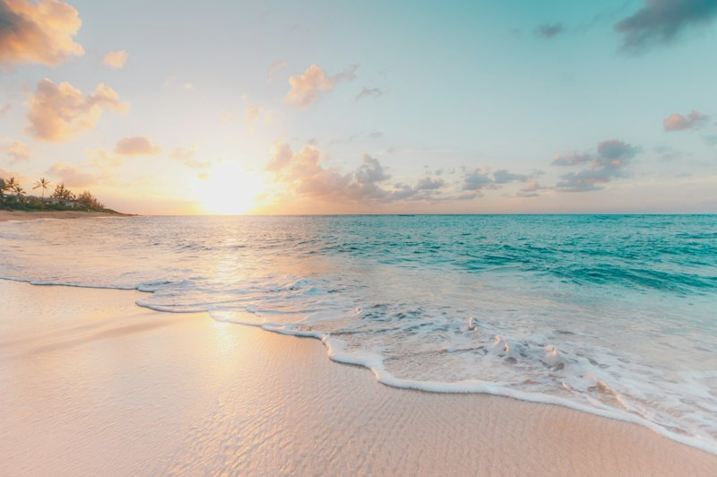
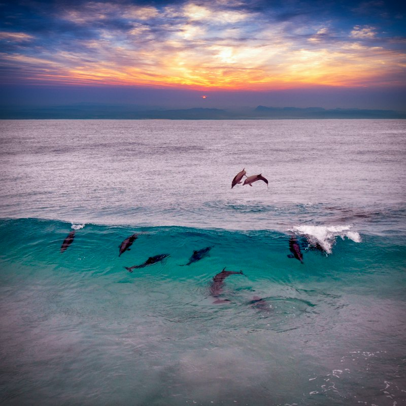

CURATED VOYAGES
2026/2027 Season
Wakatobi Diving Expeditions

Tomia & Hoga Coral Gardens
Pinnacle reef wall diving, Onemobaa coral garden, danau ubur-ubur terpencil, dan homestay pulau Hoga.
IDR 4.250.000

Wild Dolphin Watching & Sombu Dive
Berlayar dengan perahu katinting menyapa kawanan ratusan lumba-lumba pemintal fajar di perairan Wangi-Wangi.
IDR 2.950.000

Private Hoga Sandbank & Marine Safari
Eksplorasi pasir putih terpencil Pulau Hoga, dinding karang vertikal, dan santap siang ikan bakar segar Suku Bajo.
IDR 850.000